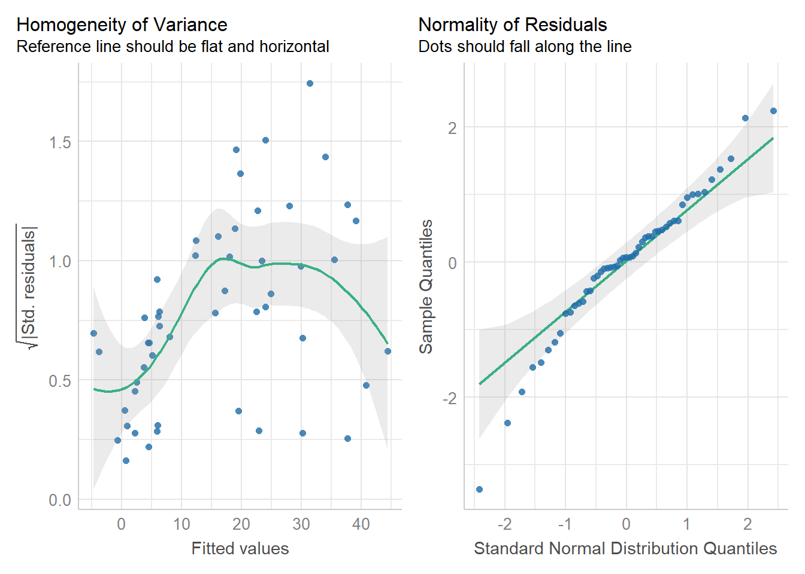
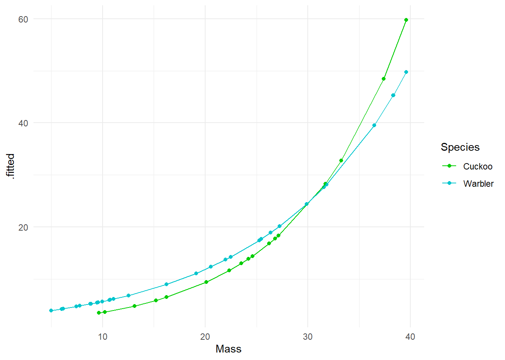

Chapter 16 Generalized Linear Models
16.1 Motivation
In the previous workshop we have seen that linear models are a powerful modelling tool. However, we have to satisfy the following assumptions:
- A linear relationship between predictors and the mean response value.
- Variances are equal across all predicted values of the response (homoscedatic)
- Errors are normally distributed.
- Samples collected at random.
- No omitted variables of importance
If assumptions 1-3 are violated we can often transform our response variable to try and fix this (Box-Cox & transformation). However, in a lot of other cases this is either not possible (e.g binary output) or we want to explicitly model the underlying distribution (e.g count data). Instead, we can use Generalised Linear Models (GLMs) that let us change the error structure (assumption 3) to something other than a normal distribution.
16.2 Generalised Linear Models (GLMs)
Generalised Linear Models (GLMs) have:
- A linear predictor.
- An error/variance structure.
- A link function (like an ‘internal’ transformation).
The first (1) should be familiar, its everything that comes after the ~ in a linear model formula. Or as an equation \(\beta_0 + \beta_1\). The second (2) should also be familiar, variance measures the error structure of the model \(\epsilon\). An ordinary least squares model uses the normal distribution, but GLMs are able to use a wider range of distributions including poisson, binomial and Gamma. The third component (3) is less familiar, the link function is the equivalent of a transformation in an ordinary least squares model. However, rather than transforming the data, we transform the predictions made by the linear predictors. Common link functions are log and square root.
Maximum Likelihood - Generalised Linear Models fit a regression line by finding the parameter values that best fit the model to the data. This is very similar to the way that ordinary least squares finds the line of best fit by reducing the sum of squared errors. In fact for data with normally distributed residuals, the particular form of maximum likelihood is least squares.
However the normal (gaussian) distribution will not be a good model for lots of other types of data, binary data, is a good example and one we will investigate in this workshop.
Maximum likelihood provides a more generalized approach to model fitting that includes, but is broader than, least squares.
An advantage of the least squares method we have been using is that we can generate precise equations for the fit of the line. In contrast the calculations for GLMs (which are beyond the scope of this course) are approximate, essentially multiple potential best fit lines are made and compared against each other.
You will see two main differences in a GLM output:
If the model is one where the mean and variance are calculated separately (e.g. for most normal distributions), unceratinty estimates use the t distribution; and when we compare complex to simplified models (using anova() or drop1()) we use the F-test.
However, when we provide distributions where the mean and variance are expected to change together (Poisson and Binomial), then we calculate uncertainty estimates using the z distribution, and compare models with the chi-square distribution.
The simple linear regression model we have used so far is a special cases of a GLM:
lm(height ~ weight)is equivalent to
glm(height ~ weight, family=gaussian(link=identity))Compared to lm(), the glm() function takes an additional argument called family, which
specifies the error structure and link function.
The default link function for the normal (Gaussian) distribution is the identity, where no transformation is neededi.e. for mean \(\mu\) we have:
\[ \mu = \beta_0 + \beta_1 X \]
Defaults are usually good choices (shown in bold below):
| Family | Link |
|---|---|
gaussian |
identity |
binomial |
logit, probit or cloglog |
poisson |
log, identity or sqrt |
Gamma |
inverse, identity or log |
inverse.gaussian |
1/mu^2 |
quasibinomial |
logit |
quasipoisson |
log |
EXERCISE - Using the fruitfly data introduced last week fit a linear model with lifespan as a response variable and sleep, type and thorax as explanatory variables. Compare this to a glm fitted with a gaussian error distribution and identity link for the mean
flyls <- lm(longevity ~ type + thorax + sleep, data = fruitfly)
summary(flyls)Call:
lm(formula = longevity ~ type + thorax + sleep, data = fruitfly)
Residuals:
Min 1Q Median 3Q Max
-28.153 -6.836 -2.191 7.196 29.046
Coefficients:
Estimate Std. Error t value Pr(>|t|)
(Intercept) -56.04502 11.17882 -5.013 1.87e-06 ***
typeInseminated 3.62796 2.77122 1.309 0.193
typeVirgin -13.24603 2.76198 -4.796 4.70e-06 ***
thorax 144.43008 13.11616 11.012 < 2e-16 ***
sleep -0.05281 0.06383 -0.827 0.410
---
Signif. codes: 0 ‘***’ 0.001 ‘**’ 0.01 ‘*’ 0.05 ‘.’ 0.1 ‘ ’ 1
Residual standard error: 11.23 on 120 degrees of freedom
Multiple R-squared: 0.6046, Adjusted R-squared: 0.5914
F-statistic: 45.88 on 4 and 120 DF, p-value: < 2.2e-16flyglm <- glm(longevity ~ type + thorax + sleep,
family = gaussian(link = "identity"),
data = fruitfly)
summary(flyglm)glm(formula = longevity ~ type + thorax + sleep, family = gaussian(link = "identity"),
data = fruitfly)
Deviance Residuals:
Min 1Q Median 3Q Max
-28.153 -6.836 -2.191 7.196 29.046
Coefficients:
Estimate Std. Error t value Pr(>|t|)
(Intercept) -56.04502 11.17882 -5.013 1.87e-06 ***
typeInseminated 3.62796 2.77122 1.309 0.193
typeVirgin -13.24603 2.76198 -4.796 4.70e-06 ***
thorax 144.43008 13.11616 11.012 < 2e-16 ***
sleep -0.05281 0.06383 -0.827 0.410
---
Signif. codes: 0 ‘***’ 0.001 ‘**’ 0.01 ‘*’ 0.05 ‘.’ 0.1 ‘ ’ 1
(Dispersion parameter for gaussian family taken to be 126.0381)
Null deviance: 38253 on 124 degrees of freedom
Residual deviance: 15125 on 120 degrees of freedom
AIC: 966.2
Number of Fisher Scoring iterations: 2They are exactly the same. This is not surprising, as the maximum likelihood being fitted here is the same as an ordinary least squares model.
16.2.1 Workflow for fitting a GLM
- Exploratory data analysis
- Choose suitable error term
- Choose suitable mean function (and link function)
- Fit model
- Residual checks and model fit diagnostics
- Revise model (transformations etc.)
- Model simplification if required
- Check final model again
When you transform your data e.g. with a log or sqrt, this changes the mean and variance at the same time (everything gets squished down). This might be fine, but can lead to difficult model fits if you need to reduce unequal variance but this leads to a change (often curvature) in the way the predictors fit to the response variable.
GLMs model the mean and variability independently. So a link function produces a transformation between predictors and the mean, and the relationship between the mean and data points is modelled separately.
16.3 Poisson regression (for count data or rate data)
Count or rate data are ubiquitous in the life sciences (e.g number of parasites per microlitre of blood, number of species counted in a particular area). These type of data are discrete and non-negative. In such cases assuming our response variable to be normally distributed is not typically sensible. The Poisson distribution lets us model count data explicitly.
Recall the simple linear regression case (i.e a GLM with a Gaussian error structure and identity link). For the sake of clarity let’s consider a single explanatory variable where \(\mu\) is the mean for Y:
\[ \begin{aligned} \mu & = \beta_0 + \beta_1X \end{aligned} \]
The mean function is unconstrained, i.e the value of \(\beta_0 + \beta_1X\) can range from \(-\infty\) to \(+\infty\). If we want to model count data we therefore want to constrain this mean to be positive only. Mathematically we can do this by taking the logarithm of the mean (the log is the default link for the Poisson distribution). We then assume our count data variance to be Poisson distributed (a discrete, non-negative distribution), to obtain our Poisson regression model (to be consistent with the statistics literature we will rename \(\mu\) to \(\lambda\)):
\[ \begin{aligned} Y & \sim \mathcal{Pois}(\lambda) \\ \log{\lambda} & = \beta_0 + \beta_1X \end{aligned} \]
Note - the relationship between the mean and the data is modelled by Poisson variance. The relationship between the predictors and the mean is modelled by a log transformation.
The Poisson distribution has the following characteristics:
- Discrete variable, defined on the range \(0, 1, \dots, \infty\).
- A single rate parameter \(\lambda\), where \(\lambda > 0\).
- Mean = \(\lambda\)
- Variance = \(\lambda\)
So we model the variance as equal to the mean - as the mean increases so does the mean.


So for the Poisson regression case we assume that the mean and variance are the same. Hence, as the mean increases, the variance increases also (heteroscedascity). This may or may not be a sensible assumption so watch out! Just because a Poisson distribution usually fits well for count data, doesn’t mean that a Gaussian distribution can’t always work.
Recall the link function between the predictors and the mean and the rules of logarithms (if \(\log{\lambda} = k\), then \(\lambda = e^k\)):
\[ \begin{aligned} \log{\lambda} & = \beta_0 + \beta_1X \\ \lambda & = e^{\beta_0 + \beta_1X } \end{aligned} \] Thus we are effectively modelling the observed counts (on the original scale) using an exponential mean function.
16.4 Example: Cuckoos
In a study by Kilner et al. (1999), the authors studied the begging rate of nestlings in relation to total mass of the brood of reed warbler chicks and cuckoo chicks. The question of interest is:
How does nestling mass affect begging rates between the different species?
cuckoo <- read_csv("data/cuckoo.csv")head(cuckoo)The data columns are:
- Mass: nestling mass of chick in grams
- Beg: begging calls per 6 secs
- Species: Warbler or Cuckoo

There seem to be a relationship between mass and begging calls and it could be different between species. It is tempting to fit a linear model to this data. In fact, this is what the authors of the original paper did; reed warbler chicks (solid circles, dashed fitted line) and cuckoo chick (open circles, solid fitted line):

This model is inadequate. It is predicting negative begging calls within the range of the observed data, which clearly does not make any sense.
Let us display the model diagnostics plots for this linear model.
## Fit model
## There is an interaction term here, it is reasonable to think that how calling rates change with size might be different between the two species.
cuckoo_ls1 <- lm(Beg ~ Mass+Species+Mass:Species, data=cuckoo) performance::check_model(cuckoo_ls1)
The residuals plot depicts a strong “funnelling” effect, highlighting that the model assumptions are violated. We should therefore try a different model structure.
The response variable in this case is a classic count data: discrete and bounded below by zero (i.e we cannot have negative counts). We will therefore try a Poisson model using the canonical log link function for the mean:
\[ \log{\lambda} = \beta_0 + \beta_1 M_i + \beta_2 S_i + \beta_3 M_i S_i \]
where \(M_i\) is nestling mass and \(S_i\) a dummy variable
\[ S_i = \left\{\begin{array}{ll} 1 & \mbox{if $i$ is warbler},\\ 0 & \mbox{otherwise}. \end{array} \right. \]
The term \(M_iS_i\) is an interaction term. Think of this as an additional explanatory variable in our model. Effectively it lets us have different slopes for different species (without an interaction term we assume that both species have the same slope for the relationship between begging rate and mass, and only the intercept differ).
The mean regression lines for the two species look like this:
- Cuckoo (\(S_i=0\))
\[ \begin{aligned} \log{\lambda} & = \beta_0 + \beta_1 M_i + (\beta_2 \times 0) + (\beta_3 \times M_i \times 0)\\ \log{\lambda} & = \beta_0 + \beta_1 M_i \end{aligned} \]
Intercept = \(\beta_0\), Gradient = \(\beta_1\)
Warbler (\(S_i=1\))
$$
Fit the model with the interaction term in R:
cuckoo_glm1 <- glm(Beg ~ Mass + Species + Mass:Species, data=cuckoo, family=poisson(link="log"))
summary(cuckoo_glm1)Note there appears to be a negative interaction effect for Species:Mass, indicating that Begging calls do not increase with mass as much as you would expect for Warblers as compared to Cuckoos.
Plot the mean regression line for each species:
# using augment allows you to generate fitted outcomes from the regression, make sure to set the predictions onto the response scale in order to 'back transform` the data onto the original scale
broom::augment(cuckoo_glm1, type.predict = "response") %>%
ggplot(aes(x=Mass, y=.fitted, colour=Species)) +
geom_point() +
geom_line()+
scale_colour_manual(values=c("green3","turquoise3"))+
theme_minimal()
We get an exponential curve in the scale of the original data, which is the same as a straight line in the log-scaled version of the data. So if we fit the same model without specifying type.predict = "response" Then we get the fitted generalized linear response.
broom::augment(cuckoo_glm1) %>%
ggplot(aes(x=Mass, y=.fitted, colour=Species)) +
geom_point() +
geom_line()+
scale_colour_manual(values=c("green3","turquoise3"))+
theme_minimal()
Compare the new Poisson model fits to the ordinary least squares model. We can see that although the homogeneity of variance is far from perfect, the curvature in the model has been drastically reduced (this makes sense as now we have a model fitted to exponential data), and the qqplot is within acceptable confidence intervals.
performance::check_model(cuckoo_glm1,
check = c("homogeneity",
"qq"))
summary(cuckoo_glm1)Call:
glm(formula = Beg ~ Mass + Species + Mass:Species, family = poisson(link = "log"),
data = cuckoo)
Deviance Residuals:
Min 1Q Median 3Q Max
-7.5178 -2.8298 -0.6672 1.5564 6.0631
Coefficients:
Estimate Std. Error z value Pr(>|z|)
(Intercept) 0.334475 0.227143 1.473 0.14088
Mass 0.094847 0.007261 13.062 < 2e-16 ***
SpeciesWarbler 0.674820 0.259217 2.603 0.00923 **
Mass:SpeciesWarbler -0.021673 0.008389 -2.584 0.00978 **
---
Signif. codes: 0 ‘***’ 0.001 ‘**’ 0.01 ‘*’ 0.05 ‘.’ 0.1 ‘ ’ 1
(Dispersion parameter for poisson family taken to be 1)
Null deviance: 970.08 on 50 degrees of freedom
Residual deviance: 436.05 on 47 degrees of freedom
AIC: 615.83
Number of Fisher Scoring iterations: 6A reminder of how to interpret the regression coefficients of a model with an interaction term
Intercept = \(\beta 0\) (intercept for the reference* so here the log** of the mean number of begging calls for cuckoos when mass = 0)
Mass = \(\beta1\) (slope: the change in the log mean count of begging calls for every gram of bodyweight for cuckoos)
SpeciesWarbler = \(\beta2\) (the log mean increase/decrease in begging call rate of the warblers relative to cuckoos)
Mass:SpeciesWarbler =\(\beta3\) (the log mean increase/decrease in the slope for warblers relative to cuckoos)
Note - because this is a Poisson distribution where variance is fixed with the mean we are using z scores. Estimates are on a log scale because of the link function - this means so are any S.E. or confidence intervals
16.5 Estimates and Intervals
Remember that not only is this Poisson model fitting variance using a Poisson and not Normal distribution. It is also relating the predictors to the response variable with a “log-link” this means we need to exponentiate our estimates to get them on the same scale as the response (y) variable. Until you do this all the model estimates are logn(y).
exp(coef(cuckoo_glm1)[1]) ### Intercept - Incidence rate at Mass=0, and Species = Cuckoo
exp(coef(cuckoo_glm1)[2]) ### Change in the average incidence rate with Mass
exp(coef(cuckoo_glm1)[3]) ### Change in the incidence rate intercept when Species = Warbler and Mass = 0
exp(coef(cuckoo_glm1)[4]) ### The extra change in incidence rate for each unit increase in Mass when Species = Warbler (the interaction effect)Luckily when you tidy your models up with broom you can specify that you want to put model predictions on the response variable scale by specifying exponentiate=T which will remove the log transformation, and allow easy calculation of confidence intervals.
broom::tidy(cuckoo_glm1,
exponentiate=T,
conf.int=T)| term | estimate | std.error | statistic | p.value | conf.low | conf.high |
|---|---|---|---|---|---|---|
| (Intercept) | 1.3972071 | 0.2271431 | 1.472531 | 0.1408775 | 0.8858795 | 2.1589962 |
| Mass | 1.0994905 | 0.0072615 | 13.061667 | 0.0000000 | 1.0841087 | 1.1154266 |
| SpeciesWarbler | 1.9636787 | 0.2592166 | 2.603304 | 0.0092330 | 1.1889064 | 3.2864493 |
| Mass:SpeciesWarbler | 0.9785598 | 0.0083890 | -2.583559 | 0.0097787 | 0.9625068 | 0.9946969 |
16.5.1 Interpretation
It is very important to remember whether you are describing the results on the log-link scale or the original scale. It would usually make more sense to provide answers on the original scale, but this means you must first exponentiate the relationshio between response predictors as described above when writing the results.
In this example we wished to infer the relationship between begging rates and mass in these two species.
I hypothesised that the rate of begging in chicks would increase as their body size increased. Interestingly I found there was a significant interaction effect with mass and species, where Warbler chicks increased their calling rate with mass at a rate that was only 0.98 [95%CI: 0.96-0.99] that of Cuckoo chicks (Poisson GLM: \(\chi^2\)1,47 = 6.77, P = 0.009). This meant that while at hatching Warbler chicks start with a mean call rate that is higher than their parasitic brood mates, this quickly reverses as they grow.
# For a fixed mean-variance model we use a Chisquare distribution
drop1(cuckoo_glm1, test = "Chisq")
# emmeans can be another handy function - if you specify response then here it provideds the average call rate for each species, at the average value for any continuous measures - so here the average call rate for both species at an average body mass of 20.3
emmeans::emmeans(cuckoo_glm1, specs = ~ Species:Mass, type = "response")16.6 Overdispersion
There is one extra check we need to apply to a Poisson model and that’s for overdispersion
Poisson (and binomial models) assume that the variance is equal to the mean.
However, if there is residual deviance that is bigger than the residual degrees of freedom then there is more variance than we expect from the prediction of the mean by our model.
Overdispersion can be diagnosed by \(\frac{residual~deviance}{residual~degrees~of~freedom}\) which from our example here ‘summary()’ is \(\frac{436}{47} = 9.3\)
Overdispersion statistic values > 1 = Overdispersed
Overdispersion is a result of larger than expected variance for that mean under a Poisson distribution, this is clearly an issue with our model!
Luckily a simple fix is to fit a quasi-likelihood model which accounts for this, think of “quasi” as “sort of but not completely” Poisson.
cuckoo_glm2 <- glm(Beg ~ Mass+Species+Mass:Species, data=cuckoo, family=quasipoisson(link="log"))Call:
glm(formula = Beg ~ Mass + Species + Mass:Species, family = quasipoisson(link = "log"),
data = cuckoo)
Deviance Residuals:
Min 1Q Median 3Q Max
-7.5178 -2.8298 -0.6672 1.5564 6.0631
Coefficients:
Estimate Std. Error t value Pr(>|t|)
(Intercept) 0.33448 0.63129 0.530 0.599
Mass 0.09485 0.02018 4.700 2.3e-05 ***
SpeciesWarbler 0.67482 0.72043 0.937 0.354
Mass:SpeciesWarbler -0.02167 0.02332 -0.930 0.357
---
Signif. codes: 0 ‘***’ 0.001 ‘**’ 0.01 ‘*’ 0.05 ‘.’ 0.1 ‘ ’ 1
(Dispersion parameter for quasipoisson family taken to be 7.7242)
Null deviance: 970.08 on 50 degrees of freedom
Residual deviance: 436.05 on 47 degrees of freedom
AIC: NA
Number of Fisher Scoring iterations: 6As you can see, while none of the estimates have changed, the standard errors (and therefore our confidence intervals) have, this accounts for the greater than expected uncertainty we saw with the deviance, and applies a more cautious estimate of uncertainty. The interaction effect appears to no longer be significant at \(\alpha\) = 0.05, now that we have wider standard errors.
Note - because we are now estimating the variance again, the test statistics have reverted to t distributions and anova and drop1 functions should specify the F-test again.
Question - How would you write up an Analysis Methods section?
I used a Poisson log-link Generalized Linear Model with quasi-likelihoods to account for overdispersion to analyse begging call rates in Warbler and Cuckoo chicks. The species of chick was included as a categorical predictor and mass was included as a continuous predictor.
The initial model also included an interaction term between species and mass, but this was removed from the final model as removal of this term did not significantly alter the fit of the model (ANOVA).
All analyses were carried out in R (ver 4.1.3) (R Core Team 2021) with the following packages; tidyverse (Wickham et al 2019), performance (Lüdecke et al 2021) for checking model assumptions, and MASS (Venables & Ripley 2002) for model comparisons.
16.7 Logistic regression (for binary data)
When our response variable is binary, we can use a glm with a binomial error distribution
So far we have only considered continuous and discrete data as response variables. What if our response is a categorical variable (e.g passing or failing an exam, voting yes or no in a referendum, whether an egg has successfully fledged or been predated, infected/uninfected, alive/dead)?
We can model the probability \(p\) of being in a particular class as a function of other explanatory variables.
These type of binary data are assumed to follow a Bernoulli distribution (which is a special case of Binomial) which has the following characteristics:
\[ Y \sim \mathcal{Bern}(p) \]
- Binary variable, taking the values 0 or 1 (yes/no, pass/fail).
- A probability parameter \(p\), where \(0 < p < 1\).
- Mean = \(p\)
- Variance = \(p(1 - p)\)
Let us now place the Gaussian (simple linear regression), Poisson and logistic models next to each other:
\[ \begin{aligned} Y & \sim \mathcal{N}(\mu, \sigma^2) &&& Y \sim \mathcal{Pois}(\lambda) &&& Y \sim \mathcal{Bern}(p)\\ \mu & = \beta_0 + \beta_1X &&& \log{\lambda} = \beta_0 + \beta_1X &&& ?? = \beta_0 + \beta_1X \end{aligned} \]
Now we need to fill in the ?? with the appropriate term. Similar to the Poisson regression case,
we cannot simply model the probabiliy as \(p = \beta_0 + \beta_1X\), because \(p\) cannot be negative.
\(\log{p} = \beta_0 + \beta_1X\) won’t work either, because \(p\) cannot be greater than 1. Instead we
model the log odds \(\log\left(\frac{p}{1 - p}\right)\) as a linear function. So our logistic regression model looks
like this:
\[ \begin{aligned} Y & \sim \mathcal{Bern}(p)\\ \log\left(\frac{p}{1 - p}\right) & = \beta_0 + \beta_1 X \end{aligned} \]
Again, note that we are still “only” fitting straight lines through our data, but this time in the log odds space. As a shorthand notation we write \(\log\left(\frac{p}{1 - p}\right) = \text{logit}(p) = \beta_0 + \beta_1 X\).
We can also re-arrange the above equation so that we get an expression for \(p\)
\[ p = \frac{e^{\beta_0 + \beta_1 X}}{1 + e^{\beta_0 + \beta_1 X}} \]
Note how \(p\) can only vary between 0 and 1.
To implement the logistic regression model in R, we choose family=binomial(link=logit) (the Bernoulli distribution is a special case of the Binomial distribution).
glm(response ~ explanatory, family=binomial(link=logit))In 1985, NASA made the decision to send the first civilian into space.
This decision brought a huge amount of public attention to the STS-51-L mission, which would be Challenger’s 25th trip to space and school teacher Christa McAuliffe’s 1st. On the afternoon of January 28th, 1986 students around America tuned in to watch McAuliffe and six other astronauts launch from Cape Canaveral, Florida. 73 seconds into the flight, the shuttle experienced a critical failure and broke apart in mid air, resulting in the deaths of all seven crewmembers: Christa McAuliffe, Dick Scobee, Judy Resnik, Ellison Onizuka, Ronald McNair, Gregory Jarvis, and Michael Smith.
After an investigation into the incident, it was discovered that the failure was caused by an O-ring in the solid rocket booster. Additionally, it was revealed that such an incident was foreseeable.
In this half of the worksheet we will discuss how the right statistical model could have predicted the critical failure of an O-ring on that day.
Challenger <- read_csv("data/Challenger.csv")head(Challenger)The data columns are:
oring_tot: Total number of orings on the flight
oring_dt : number of orings that failed during a flight
temp: Outside temperature on the date of the flight
flight order of flights
It was frequently discussed issue that temperature might play a role in the critical safety of the o-rings on the shuttles. One of the biggest mistakes made in assessing the flight risk for the Challenger was to only look at the flights where a failure had occurred
Challenger %>%
filter(oring_dt > 0) %>%
ggplot(aes(y=oring_dt, x=temp))+geom_point()+
ggtitle("Temperature on flight launches where an O-ring incident occurred")
From this it was concluded that temperature did not appear to affect o-ring risk of failure, as o-ring failures were detected at a range of different temperatures.
However when we compare this to the full data that was available a very different picture emerges.
Challenger %>%
ggplot(aes(y=oring_dt,
x=temp))+
geom_point()+
geom_smooth(method="lm")+
ggtitle("All launch data")
When we include the flights without incident and those with incident, we can see that there is a very clear relationship between temperature and the risk of an o-ring failure. It has been argued that the clear presentation of this data should have allowed even the casual observer to determine the high risk of disaster.
However if we want to understand the actual relationship between temperature and risk then there are several issues with fitting a linear model here - once again the data is an integer, and bounded by zero (our model predicts negative failure rates within the observed data range).
We COULD consider this as suitable for a Poisson model - but if we are really interested in determining the binary risk of having a flight with o-ring failure vs. no failure. Then we should implement a GLM with a Binomial distribution.
We can use dplyr to generate a binary column of no incident ‘0’ and fail ‘1’ for anything >0.
Challenger <- Challenger %>%
mutate(oring_binary = ifelse(oring_dt =='0', 0, 1))Fitting a binary GLM
| term | estimate | std.error | statistic | p.value | conf.low | conf.high |
|---|---|---|---|---|---|---|
| (Intercept) | 23.7749552 | 11.8203514 | 2.011358 | 0.0442877 | 7.2430347 | 58.1947978 |
| temp | -0.3667009 | 0.1751673 | -2.093432 | 0.0363106 | -0.8772585 | -0.1217173 |
So we are now fitting the following model
\[ Y \sim Bern(p) \] \[ \log\left[ \frac { P( \operatorname{oring\_binary} = fail) }{ 1 - P( \operatorname{oring\_binary} = fail) } \right] = \beta_{0} + \beta_{1}(\operatorname{temp}) \] Which in R will look like this:
binary_model <- glm(oring_binary~temp, family=binomial, data=Challenger)- Intercept = \(\beta_{0}\) = 23.77
When the temperature is 0°F the mean log-odds are 23.77 [95%CI: 7.24- 58.19] for a failure incident in the O-rings
- Temp = \(\beta_{1}\) = -0.37 [95%CI: -0.87 - -0.12]
For every rise in the temperature by 1°F, the log-odds of a critical incident fall by 0.37.
16.7.1 Probability from a binomial model
If we use the emmeans() function it will convert log-odds to estimate the probability of o-ring failure at the mean value of x (temperature).
But how does it do this?
emmeans::emmeans(binary_model, specs=~temp, type="response")This is the equation to work out probability using the exponent of the linear regression equation:
\[ P(\operatorname{risk of failure at } X=69)\left[ \frac{e^{23.77+(-0.37 \times 69.6)}}{1+e^{23.77+(-0.37 \times 69.6)}} \right] \]
Which produces the following result and we can confirm the risk of an o-ring failure on an average day is 0.15
estimate_at_69.6 <- exp(coef(binary_model)[1]+coef(binary_model)[2]*69.6)
estimate_at_69.6/(1+estimate_at_69.6)16.7.2 Changes in probability
A useful rule-of-thumb can be the divide-by-four rule.
This can be described as the maximum difference in probability for a unit change in \(X\) is \(\beta/4\).
In our example the maximum difference in probability from a one degree change in Temp is \(-0.37/4 = -0.09\)
So the maximum difference in probability of failure corresponding to a one degree change is 9%
If you want to augment your data with the model, you can use the augment() function, remembering to specify type.predict = "response to get probabilities of o-ring failure (not log odds).
broom::augment(binary_model, type.predict="response", se_fit = T) Annoyingly a limitation of the augment function is that it won’t produce 95% CI for predictions on glms. But I have written a short function to do this Don’t worry if this is a lot to get your head around - the main thing is use this code to produce 95% CI.
augment_glm <- function(mod, predict = NULL){
fam <- family(mod)
ilink <- fam$linkinv
broom::augment(mod, newdata = predict, se_fit=T)%>%
mutate(.lower = ilink(.fitted - 1.96*.se.fit),
.upper = ilink(.fitted + 1.96*.se.fit),
.fitted=ilink(.fitted))
}
augment_glm(binary_model)EXERCISE - Use the augment_glm function to make a ggplot of the changing probability of O-ring failure with temperature
augment_glm(binary_model) %>%
ggplot(aes(x=temp, y=oring_binary))+geom_line(aes(x=temp, y=.fitted))+
geom_ribbon(aes(ymin=.lower, ymax=.upper), alpha=0.2)16.8 Predictions
On the day the Challenger launched the outside air temperature was 36°F
We can use augment to add our model to new data - and make predictions about the risk of o-ring failure
Question - make a new dataset with the temperature on the day of the Challenger launch - what was the probability of o-ring failure?
First - we make a new dataset with the temperature on the day of the Challenger Launch 36°F
new_data <- tibble(temp=36, oring_binary=1)
new_data## # A tibble: 1 x 2
## temp oring_binary
## <dbl> <dbl>
## 1 36 1augment_glm(binary_model, new_data)# A tibble: 1 x 6
temp oring_binary .fitted .se.fit .lower .upper
<dbl> <dbl> <dbl> <dbl> <dbl> <dbl>
1 36 1 1.00 5.54 0.431 1.00We can see from our fitted model, an O-ring failure on the day of the Challenger launch could have been predicted with a probability of >0.999 [95%CI: 0.43-1]
16.8.1 Assumptions
The standard model checks for a binary model do not hold (check them), they are usually a mess! There are alternative methods of looking at how well your binary model works, but well not cover these here.
16.8.2 Write-up
Analysis: I used a Binomial logit-link Generalized Linear Model to analyse the effect of temperature on the likelihood of O-ring failure.
All analyses were carried out in R (ver 4.1.3) (R Core Team 2021) with the following packages; tidyverse (Wickham et al 2019).
Results: I found a significant negative relationship between temperature and probability of o-ring failure (logit-odds = -0.37 [95%CI: -0.88 - -0.12], z = -2.1, d.f = 21, P = 0.036). At an average temperature of 69.6°F the probability of o-ring failure was estimated at 0.15[0.03-0.45], but this rose to a near certainty of failure 0.99[0.43-1] at 36°F.
Note you could use drop1( test = “Chisq”) here, but as there is only one, continuous variable, we can also report directly from the summary table.